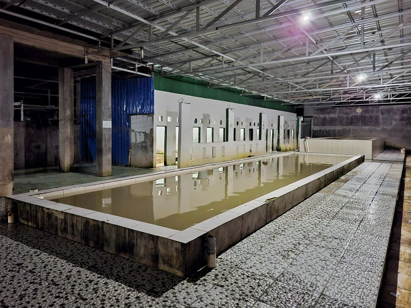
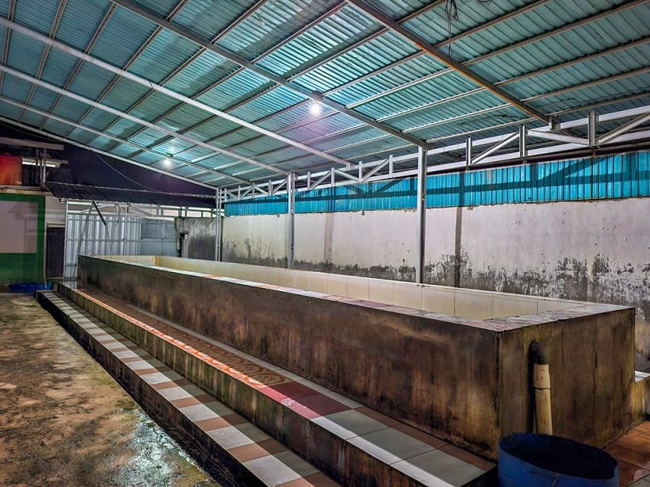
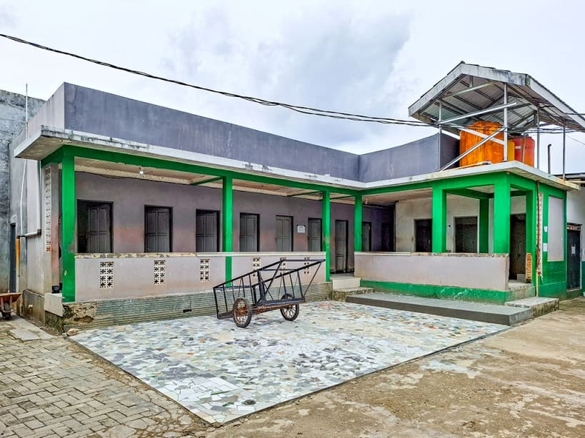
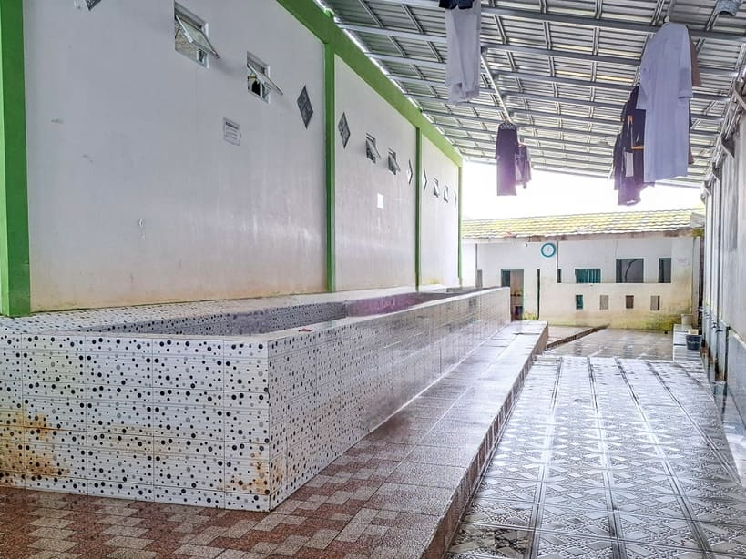

<div id="ajax-page" class="ajax-page-content">
    <div class="ajax-page-wrapper">
        <div class="ajax-page-nav">
            <div class="nav-item ajax-page-prev-next">
                <a class="ajax-page-load" href="Galeri-rumah.html"><i class="lnr lnr-chevron-left"></i></a>
                <a class="ajax-page-load" href="Galeri-dapur.html"><i class="lnr lnr-chevron-right"></i></a>
            </div>
            <div class="nav-item ajax-page-close-button">
                <a id="ajax-page-close-button" href="#"><i class="lnr lnr-cross"></i></a>
            </div>
        </div>

        <div class="ajax-page-title">
            <h1>FASILITAS MCK</h1>
            <h4>Pondok Pesantren Nurul Muhibbin Barabai</h4>
        </div>

        <div class="row">
            <div class="col-sm-8 col-md-8 portfolio-block">

                <div class="owl-carousel portfolio-page-carousel">
                    <div class="item">
                        
                        <p>Sebagian Fasilitas MCK di Pondok Pesantren</p>
                    </div>
                    <div class="item">
                        
                        <p>Sebagian Fasilitas MCK di Pondok Pesantren</p>
                    </div>
                    <div class="item">
                        
                        <p>Sebagian Fasilitas MCK di Pondok Pesantren</p>
                    </div>
                    <div class="item">
                        
                        <p>Sebagian Fasilitas MCK di Panti Yatim & Tahfidz</p>
                    </div>
                </div>

                <script type="text/javascript">
                    jQuery(document).ready(function($){
                        $('.portfolio-page-carousel').imagesLoaded(function(){
                            $('.portfolio-page-carousel').owlCarousel({
                                smartSpeed:1200,
                                items: 1,
                                loop: true,
                                dots: true,
                                nav: true,
                                navText: false,
                                margin: 10,
                                autoHeight:true
                            });
                        });
                    });
                </script>
            </div>

            <div class="col-sm-4 col-md-4 portfolio-block">
                <!-- Project Description -->
                 
                <div class="project-description">
                    <div class="block-title">
                        <h3>Deskripsi Fasilitas</h3>
                    </div>

                   <style>
                        p  {
                            text-align: justify;
                        }
                        ol {
                            margin: 0 18px;
                        }
                        ul {
                            margin: 0 18px;
                        }
                        li {
                            margin-bottom: 5px;
                        }
                        strong {
                            color: #009a4c;
                        }
                    </style>

                    <p>
                        Mandi, Cuci, Kakus (MCK) di pondok pesantren ini <strong> dirancang untuk memenuhi kebutuhan santri dalam menjaga kebersihan dan kesehatan sehari-hari</strong>. Fasilitas ini terdiri atas kolam mandi yang dapat digunakan bersama serta toilet-toilet yang disediakan secara terpisah untuk kenyamanan dan privasi. <br>
                        Kolam mandi dirancang terbuka dengan sirkulasi air yang baik, sedangkan toilet dilengkapi dengan pintu tertutup untuk menjaga kebersihan dan kenyamanan pengguna.
                    </p>
                    <br>

                    <div class="block-title">
                        <h3>Sumber Air</h3>
                    </div>

                    <p>
                        Air untuk MCK ini diambil dari <strong> dua sumber utama</strong>, yaitu sungai yang mengalir di sekitar kawasan pondok pesantren dan sumur bor yang telah dibangun. Air dari sungai digunakan untuk kolam mandi, dengan sistem penyaringan sederhana untuk memastikan kebersihan. <br>
                        Sementara itu, sumur bor menyediakan air bersih yang digunakan untuk toilet dan kebutuhan cuci lainnya. Kombinasi sumber air ini memastikan pasokan air tetap tersedia sepanjang tahun, bahkan di musim kemarau.
                    </p>
                    <br>

                    <div class="block-title">
                        <h3>Manfaat dan Dampak</h3>
                    </div>

                    <p>
                        Keberadaan MCK ini sangat penting dalam mendukung aktivitas para santri. Selain menjaga kebersihan diri, fasilitas ini juga menjadi bagian dari pembentukan kebiasaan hidup sehat di lingkungan pesantren. <br>
                        Dengan memanfaatkan sumber daya alam lokal seperti sungai dan air tanah, pondok pesantren juga berkontribusi pada pengelolaan lingkungan yang berkelanjutan. Fasilitas ini diharapkan terus terjaga kebersihannya melalui kerjasama antara pengelola pondok dan para santri.
                    </p>
                        
                    <!-- Share Buttons -->
                    <div class="share-buttons">
                        <div class="block-title">
                            <h3>Bagikan</h3>
                        </div>
                        <div class="share-buttons-group">
                            <a href="https://www.facebook.com/share.php?u=psbnmb.ct.ws" target="_blank" class="btn"><i class="fab fa-facebook-f"></i> </a>
                            <a href="#" target="_blank" class="btn"><i class="fab fa-twitter"></i> </a>
                            <a href="#" target="_blank" class="btn"><i class="fab fa-dribbble"></i> </a>
                        </div>
                    </div>
                    <!-- /Share Buttons -->
                </div>
                <!-- Project Description -->
            </div>
        </div>
    </div>
</div>
